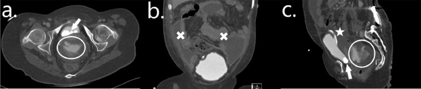
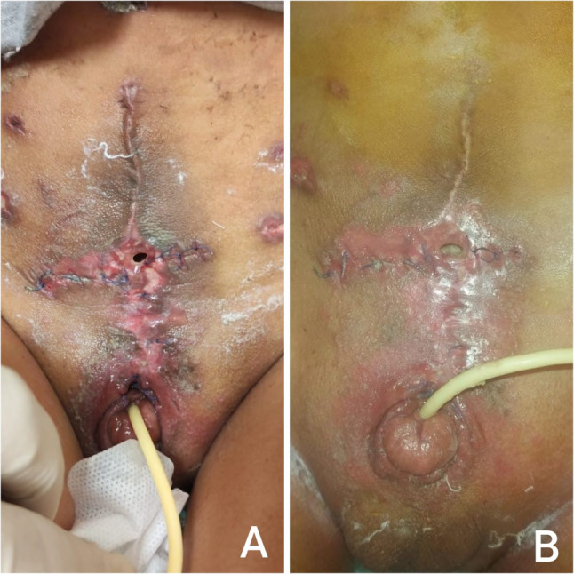
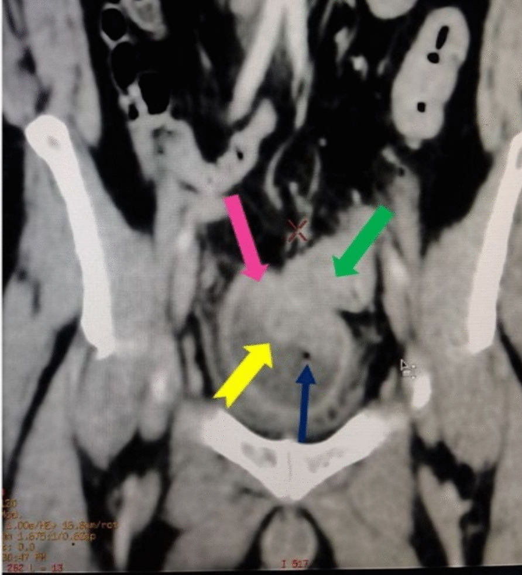

3009 — Dò bàng quang–ruột và dò bàng quang–da sau tăng dung tích bàng quang ở trẻ / Vesicoenteric and vesicocutaneous fistula after augmentation cystoplasty
Tags: pattern:ro-do pattern:khi-trong-bang-quang pattern:thoat-can-quang vung:tiet-nieu vung:bang-quang anatomy:bang-quang-thanh-kinh protocol:CT-cystogram protocol:VCUG protocol:noi-soi-bang-quang score:Clavien-Dindo
Mức chắc chắn (certainty): tổng hợp y văn (literature synthesis) — ghép cohort 22 trẻ tăng dung tích bàng quang theo dõi 13,4 ± 5,9 năm (Sci Rep 2024, PMC10879155), tổng quan biến chứng ở bệnh nhân spina bifida (Transl Androl Urol 2016, PMC4739984), loạt 20 trẻ exstrophy được ileocystoplasty + tạo hình cổ bàng quang (BMC Urol 2026, PMC13378153), loạt 4 ca thủng bàng quang (Radiol Case Rep 2022, PMC9465360), 16 ca thủng trong phúc mạc điều trị bảo tồn (Healthcare 2025, PMC12250053), ca rò đại tràng–bàng quang người lớn (J Med Case Rep 2026, PMC13245075) và ca 30 tuổi exstrophy có rò bàng quang–da (Urol Case Rep 2017, PMC5397601). Không có ca do nhóm tự chụp.
Câu hỏi thực hành: bé gái 18 tuổi, spina bifida, đã tăng dung tích bàng quang bằng hồi tràng + Mitrofanoff, vào viện vì đau bụng + chướng, có sỏi bàng quang trên phim cũ, không sốt, xét nghiệm bình thường. Không CIC được 24 giờ vì đau. Câu hỏi: đây là thủng tự phát, rò miệng nối, hay chỉ là bí tiểu do bỏ CIC — và chụp gì để trả lời? Bài chốt ba quyết định: (1) khí trong bàng quang sau tăng dung tích = phải chứng minh rò, không được mặc định là "nhiễm trùng tiểu"; (2) rò miệng nối sớm và rò da quanh chân catheter thường tự lành với dẫn lưu bàng quang đủ rộng — rò bàng quang–ruột thật thì không; (3) phân biệt rò / thủng / chấn thương catheter trên CT cystography có bơm ngược cản quang, không dựa vào thì bài tiết. Nối 672 – Biến chứng muộn sau tái tạo bàng quang bằng ruột, 3001 – Hẹp lỗ thông Mitrofanoff, 691 – Sỏi bàng quang & sỏi quanh catheter, 635 – Dị tật hệ tiết niệu nhi.
1. Tổng quan bệnh học – cơ chế hình ảnh: vì sao đường nối ruột–bàng quang là điểm yếu
- Ba thực thể phải tách bạch trước khi nói tới hình ảnh: (a) rò (fistula) = đường thông có biểu mô hóa giữa lòng bể chứa và ruột/da/âm đạo, tồn tại nhiều ngày–nhiều tuần; (b) dò miệng nối (anastomotic leak) = hở cấp tại đường khâu, chưa có đường thông ổn định, thường trong 7–14 ngày đầu; (c) thủng (perforation) = mất liên tục thành bể chứa không có đường thông ra cơ quan khác, gây thoát nước tiểu vào phúc mạc/ngoài phúc mạc — đã có bài riêng 672. Ba thực thể này trùng triệu chứng nhưng khác quyết định mổ.
- Tần suất thực tế: trong 22 trẻ tăng dung tích bàng quang (hồi tràng 19, sigma 3) theo dõi 13,4 ± 5,9 năm, có 1 (4,5%) dò miệng nối ruột–bàng quang sớm (đáp ứng với đặt Foley, không mổ) và 1 (4,5%) thủng tự phát ở đoạn ruột tăng dung tích sau 3,4 năm, kèm nhiễm khuẩn huyết E. coli, phải mổ mở (PMC10879155). Tổng quan ở bệnh nhân spina bifida nêu thủng 2–13% với tử vong tới 25% (PMC4739984) — đây là lý do không được xem nhẹ đau bụng ở trẻ có bể chứa ruột.
- Rò bàng quang–da sau tăng dung tích: loạt 20 trẻ exstrophy được ileocystoplasty + tạo hình cổ bàng quang + lỗ thông tự CIC có 1 (5%) rò bàng quang–da xuất hiện trong 7 ngày sau mổ, trên nền nhiễm trùng vết mổ, và lành sau 21 ngày chỉ với chăm sóc vết thương + dẫn lưu (PMC13378153). Dung tích bể chứa tăng từ 60,2 mL → 348,5 mL (p < 0,001) — tức là rò không nhất thiết là thất bại của phẫu thuật.
- TẠI SAO đường nối ruột–bàng quang dễ hở: đoạn ruột được detubular hóa và khâu vào vòm bàng quang, nên bờ khâu là vùng phân thủy mạch giữa mạc treo ruột và thành bàng quang; căng mạc treo, xoắn mảnh ghép, hẹp cuống mạch, thiếu máu mép khâu → hoại tử niêm mạc → hở. Thêm vào đó, bể chứa ruột tiết chất nhầy và có sỏi (36,4% trong cohort, y văn 10,5–52%) — sỏi cọ xát + nhiễm khuẩn mạn là hai yếu tố làm mỏng và rách thành về sau.
- TẠI SAO rò bàng quang–ruột lại gây "khí trong bàng quang": áp lực đại tràng cao hơn áp lực bể chứa khi bể chứa được dẫn lưu tốt, nên khí và phân đi từ ruột vào bàng quang → pneumaturia (đái ra hơi), fecaluria (đái ra phân), nhiễm khuẩn niệu đa loại vi khuẩn đường ruột. Ngược lại, nếu dòng nước tiểu đổ vào đại tràng (bể chứa nối đại tràng, rò lớn) thì bệnh nhân có tiêu chảy nước + toan chuyển hóa tăng Cl⁻ do đại tràng tái hấp thu Cl⁻/NH₄⁺ và mất HCO₃⁻ — đây là dấu hiệu sinh hóa của rò, không phải dấu hiệu hình ảnh.
- TẠI SAO phải bơm cản quang NGƯỢC dòng: rò có lưu lượng thấp và gradient áp lực nhỏ; thì bài tiết (excretory phase) làm cản quang bị pha loãng và không tạo đủ áp lực để vào đường rò. Vì vậy CT cystography phải đặt catheter, bơm cản quang pha loãng ngược dòng tới khi bể chứa căng, rồi chụp thêm thì sau tháo bỏ/ngồi–đứng; đây cũng là lý do siêu âm và CT bài tiết bình thường không loại trừ rò. Trong loạt 4 ca thủng, tác giả nhấn mạnh stress retrograde cystography có phim sau đi tiểu là phương pháp kinh điển, còn CT cystography ngày càng thay thế vì thấy được cả ổ phúc mạc và tạng lân cận (PMC9465360).
- Ngưỡng phân biệt trong phúc mạc / ngoài phúc mạc: ~60% thủng bàng quang là ngoài phúc mạc (điều trị bảo tồn bằng dẫn lưu), ~90% thủng do chấn thương có gãy khung chậu, và thủng bàng quang chiếm tới 10% chấn thương bụng (PMC9465360). Với bể chứa ruột, thủng thường ở vòm/phần trong phúc mạc vì đó là nơi mảnh ghép ruột nằm tự do trong ổ bụng.
2. Mẫu hình + chẩn đoán phân biệt theo vị trí và thời điểm (Gamut)
- Theo thời điểm:
- Sớm ≤ 30 ngày: dò miệng nối ruột–bàng quang, rò quanh chân catheter/lỗ thông, rò vết mổ (bàng quang–da), nhiễm trùng vết mổ, tắc ruột sớm.
- Muộn > 30 ngày: rò do sỏi cọ xát, rò do catheter lưu lâu (SPC, catheter qua lỗ thông), rò do u tại đường nối, rò sau xạ trị vùng chậu, rò trên nền bệnh ruột viêm (Crohn) hoặc túi thừa.
- Theo vị trí đường rò:
- Đường nối ruột–bàng quang (vesicoenteric): khí/phân trong bàng quang, nhiễm khuẩn niệu đa loại, đau hạ vị; đây là thể duy nhất bắt buộc phải mổ nếu không tự đóng.
- Thành bụng/da (vesicocutaneous): nước tiểu chảy qua vết mổ hoặc cạnh lỗ thông CIC — thể hay gặp ngay sau mổ và thường tự lành.
- Âm đạo (vesicovaginal): đái ra nước liên tục qua âm đạo, đặc biệt ở trẻ có bể chứa lớn chèn ép.
- Niệu đạo (urethrocutaneous): ở bệnh nhân exstrophy đã tạo hình niệu đạo — ca 30 tuổi trong y văn có đồng thời rò bàng quang–da và rò niệu đạo–da sau khi sỏi làm vỡ bàng quang (PMC5397601).
- Theo cơ chế khởi phát: thiếu máu mép khâu (sớm), sỏi (muộn), áp lực catheter (muộn), nhiễm trùng mạn, xạ trị, bệnh ruột viêm, chấn thương.
- Mnemonic "LEAKS": Leak miệng nối (sớm), Erosion do sỏi, Ap lực catheter (SPC/lỗ thông), Khối u tại đường nối, Sau xạ trị / bệnh ruột viêm.
3. Bảng so sánh phân biệt (ma trận đối chiếu)
| Thực thể (entity) | Hình ảnh điển hình | Chốt vào (rule-in) | Chốt loại (rule-out) | Gợi ý xác nhận |
|---|---|---|---|---|
| Rò bàng quang–ruột (vesicoenteric fistula) | Khí trong lòng bể chứa (không do vừa đặt catheter), ruột dính thành bàng quang, đường rò thấy trên CT cystography; có thể phân trong bàng quang | Khí + phân trong bàng quang + ruột dính thành + đái ra hơi/phân | Chỉ có khí, không có đường rò, sau vừa soi/bơm khí → khí do can thiệp, không phải rò | CT cystography bơm ngược + soi bàng quang; nội soi tiêu hóa nếu cần |
| Dò miệng nối ruột–bàng quang (sớm) | Thoát cản quang tại đường khâu vòm bàng quang trong 7–14 ngày, kèm dịch quanh bàng quang; không thấy đường thông tới lòng ruột | Thoát cản quang đúng đường khâu + mổ ≤ 14 ngày + sốt/đau | Đường rò rõ tới lòng ruột + khí/phân → rò thật, không chỉ là dò miệng nối | CT cystography; theo dõi đáp ứng với dẫn lưu Foley |
| Rò bàng quang–da (vesicocutaneous) | Nước tiểu qua vết mổ/lỗ thông; CT cystography thấy đường rò từ vòm bàng quang ra cân–da | Rò tại vết mổ trong 7 ngày + nhiễm trùng vết mổ + bể chứa vẫn giữ dung tích | Rò từ niệu quản hoặc từ miệng nối niệu quản–bàng quang → vị trí cao hơn, khác xử trí | Bơm xanh methylen qua catheter; CT cystography |
| Thủng tự phát (bài 672) | Thoát cản quang + dịch tự do, không có đường rò tới ruột/da; thường có sỏi, bể chứa căng | Thoát cản quang + dịch tự do + đau bụng cấp ± sốc | Có đường thông tới lòng ruột → rò, không phải thủng đơn thuần | CT cystography; phân biệt trong/ngoài phúc mạc |
| Thủng do catheter (balloon/stylet) | Lỗ thủng ngay tại vị trí bóng catheter, thường vòm sau khi bơm bóng quá căng hoặc đẩy stylet; xảy ra ngay sau đặt catheter | Thời điểm trùng khớp đặt catheter + lỗ thủng đúng vị trí bóng | Thủng ở vòm trước/xa catheter + sỏi lớn → tự phát | Soi bàng quang thấy lỗ + vị trí bóng; CT cystography |
| Viêm bàng quang sinh hơi (emphysematous cystitis) | Khí trong THÀNH bàng quang (dạng bọt) ± khí trong lòng; thành dày; bệnh nhân đái tháo đường/giảm miễn dịch | Khí trong thành + thành dày + cấy nước tiểu dương | Khí chỉ trong lòng, thành mỏng, không đường rò → khí do can thiệp/rò | CT cửa sổ mềm; cấy máu/nước tiểu |
| Rò bàng quang–âm đạo | Nước tiểu qua âm đạo; CT cystography thấy đường rò ra sau, dưới | Đái không kiểm soát qua âm đạo + đường rò thành sau | Rò ra da/thành trước → bàng quang–da | Soi âm đạo + bơm xanh methylen |
| Nhiễm trùng tiểu đơn thuần trên bể chứa ruột | Thành dày, cặn, không khí, không thoát cản quang | Cấy dương + sốt + không khí + không thoát cản quang | Có khí/thoát cản quang → phải loại rò trước khi gọi "nhiễm trùng đơn thuần" | Cấy nước tiểu; CT cystography nếu tái phát |

Bệnh nhân nữ 18 tuổi, spina bifida, đã ileocystoplasty + Mitrofanoff; đau bụng + chướng, xét nghiệm bình thường, không CIC được 24 giờ. (a) trục ngang: nhiều sỏi trong bể chứa (mũi tên trắng) và catheter trong lòng; (b) thì vành: dịch tự do trong phúc mạc (×), bể chứa ngấm cản quang; (c) thì đứng: thoát cản quang hoạt động (vòng tròn) ra phúc mạc, bóng catheter (sao). Đây là thủng trong phúc mạc tự phát, không phải rò — phân biệt bằng không có đường thông tới ruột. Nguồn: Radiol Case Rep 2022 (PMC9465360), CC BY 4.0, nguyên bản.
Bé gái trong loạt 20 trẻ exstrophy được ileocystoplasty + tạo hình cổ bàng quang + lỗ thông tự CIC. (A) ngày 7 sau mổ: nhiễm trùng vết mổ, lỗ rò bàng quang–da giữa đường mổ (đầu dò trong lỗ thông); (B) ngày 21: rò đã tự lành, lỗ thông CIC hoạt động. Bài học: rò da sớm không đồng nghĩa thất bại — dẫn lưu + chăm sóc vết thương là đủ. Nguồn: BMC Urol 2026 (PMC13378153), CC BY-NC-ND 4.0, nguyên bản, không crop/ghép.
Ảnh tham chiếu dấu hiệu, không phải bệnh cảnh nhi: bệnh nhân 42 tuổi (viêm túi thừa đại tràng sigma, KHÔNG tăng dung tích bàng quang), rò đại tràng–bàng quang ~5 cm sau 10 năm chẩn đoán muộn. CT vành: thành sau bàng quang dày (mũi tên hồng), đại tràng sigma dính thành bàng quang (mũi tên xanh lá), khí trong lòng bàng quang (mũi tên xanh dương — dấu hiệu đặc hiệu của thông thương ruột–bàng quang), khối giả lòng trong bàng quang do quai sigma thoát vị (mũi tên vàng). Nguồn: J Med Case Rep 2026 (PMC13245075), CC BY-NC-ND 4.0, nguyên bản.Đọc "khí trong bàng quang" cho đúng
- Khí + phân trong bàng quang = gần như chắc chắn rò ruột–bàng quang; khí đơn thuần có thể do vừa đặt catheter, vừa soi bàng quang, bơm khí qua lỗ thông, hoặc viêm bàng quang sinh hơi.
- Vị trí khí: khí tự do nổi lên phần trước trên khi nằm ngửa; khí trong thành (dạng bọt, theo thành) gợi ý viêm bàng quang sinh hơi ở bệnh nhân đái tháo đường/giảm miễn dịch.
- Không có khí không loại trừ rò: rò nhỏ, dính chặt, hoặc bể chứa được dẫn lưu liên tục có thể không thấy khí — phải bơm cản quang ngược dòng.
4. Protocol chẩn đoán – quyết định điều trị
- Bước 0 — nhận diện bệnh nhân "im lặng": trẻ spina bifida/bể chứa ruột mất cảm giác đau tạng, nên thủng/rò có thể chỉ biểu hiện sốt, nôn, li bì, tăng CRP, toan chuyển hóa, vô niệu. Ngưỡng cảnh báo: CRP tăng + đau bụng không rõ nguyên nhân + không CIC được → chụp ngay, không chờ "theo dõi 24 giờ".
- Bước 1 — siêu âm tại giường: dịch tự do, khí trong lòng/thành bể chứa, sỏi, dày thành, đường rò ra da. Siêu âm không loại trừ rò.
- Bước 2 — CT cystography (chìa khóa):
- Đặt catheter qua đường niệu đạo hoặc qua lỗ thông (nếu có Mitrofanoff), bơm cản quang pha loãng ngược dòng tới khi bể chứa căng; chụp trục ngang + vành + đứng, thêm thì sau tháo bỏ catheter/ngồi–đứng để bắt rò lưu lượng thấp.
- Đọc 5 điểm: (1) thành bể chứa có mất liên tục? (2) cản quang ra phúc mạc hay ngoài phúc mạc? (3) có đường thông tới lòng ruột/da/âm đạo? (4) có sỏi/dị vật tại lỗ rò? (5) có quai ruột dính thành hay khối lòng trong bàng quang?
- CT bài tiết đơn thuần không đủ — trong ca 42 tuổi, chẩn đoán chỉ được đặt sau khi thấy khí trong bàng quang + ruột dính thành trên CT có cản quang (PMC13245075).
- Bước 3 — soi bàng quang + nghiệm pháp xanh methylen: xác định vị trí lỗ rò, loại trừ sỏi làm tổn thương niêm mạc, và đánh giá miệng nối ruột–bàng quang. Ở ca 30 tuổi exstrophy, soi bàng quang qua chính đường rò đã xác định được rò niệu đạo–da phối hợp và lỗ thông bị tắc (PMC5397601).
- Bước 4 — quyết định theo loại tổn thương:
| Tình huống | Xử trí đầu tay | Số liệu / lưu ý |
|---|---|---|
| Dò miệng nối ruột–bàng quang sớm, bệnh nhân ổn định | Dẫn lưu bàng quang đủ rộng (Foley lớn/qua lỗ thông) + kháng sinh + nuôi ăn | Trong cohort 22 trẻ, 1/22 (4,5%) dò miệng nối và tự khỏi sau khi đặt Foley (PMC10879155) |
| Rò bàng quang–da sớm sau mổ | Chăm sóc vết thương + dẫn lưu + kháng sinh; theo dõi 2–3 tuần | 1/20 (5%), xuất hiện ≤ 7 ngày, lành sau 21 ngày (PMC13378153) |
| Thủng trong phúc mạc, bệnh nhân ổn định, lỗ nhỏ | Bảo tồn: catheter niệu đạo cỡ lớn + catheter lỗ thông + kháng sinh | 15/16 (94%) thành công, biến chứng 25%, catheter trung vị 18 ngày (PMC12250053) |
| Thủng trong phúc mạc có sốc/nhiễm khuẩn huyết/lỗ lớn | Mổ mở khâu thủng + dẫn lưu | Mổ ngay giảm tử vong 59% so với trì hoãn (PMC12250053 dẫn) |
| Rò ruột–bàng quang thật, kéo dài | Mổ: cắt đường rò, khâu ruột + bàng quang, có thể chen vạt cơ | Ca 30 tuổi: vạt cơ thẳng bụng che cả rò bàng quang–da và niệu đạo–da (PMC5397601) |
| Rò do sỏi | Lấy sỏi + dẫn lưu, sửa thành bể chứa nếu mỏng | Sỏi 36,4% cohort; y văn 10,5–52% (PMC10879155) |
| Rò do xạ trị/bệnh ruột viêm | Chuyển hướng nước tiểu (dẫn lưu qua da/nephrostomy) trước, sửa thì sau | Mô xạ xơ, khâu trực tiếp thất bại cao |
- Bước 5 — xác nhận lành trước khi bỏ catheter: cystogram/cystography áp lực (stress) sau 2 tuần — trong ca 18 tuổi, phim áp lực sau 2 tuần không còn thoát cản quang, bệnh nhân trở lại CIC và tán sỏi 6 tuần sau (PMC9465360). Không bỏ catheter chỉ vì hết đau.
flowchart TD
A[Tre co be chua ruot: dau bung, sot, khong CIC duoc] --> B{Sot + CRP tang + dau bung?}
B -->|Co| C[Catheter lon + khang sinh + cam mau/cay]
B -->|Khong| D[Sieu am: dich tu do, khi, soi]
C --> D
D --> E[CT cystography: bom can quang NGUOC dong + thi sau thao catheter]
E --> F{Mat lien tuc thanh be chua?}
F -->|Khong| G{Khi hoac phan trong bang quang?}
G -->|Co| H[Ro ruot-bang quang: soi bang quang + noi soi tieu hoa]
H --> I[Mo cat duong ro + khau ruot va bang quang]
G -->|Khong| J[Theo doi: khi do catheter/soi, viem sinh hoi]
F -->|Co| K{Can quang ra phuc mac?}
K -->|Trong phuc mac| L{Shock, nhim khuan huyet, lo lon?}
L -->|Co| M[Mo mo khao thung + dan luu]
L -->|Khong| N[Bao ton: catheter nieu dao + catheter lo thong + khang sinh]
K -->|Ngoai phuc mac| N
N --> O[Cystogram ap luc sau 2 tuan]
M --> O
O --> P{Con thoat can quang?}
P -->|Khong| Q[Bo catheter, tro lai CIC, dieu tri soi]
P -->|Co| R[Dan luu keo dai / mo sua]
5. Biến thể bình thường và cạm bẫy
- Bẫy 1 — "khí là do nhiễm trùng tiểu": trẻ CIC đưa khí vào bàng quang mỗi lần đặt catheter, nên khí đơn thuần không đặc hiệu. Chỉ chốt rò khi có khí + phân, ruột dính thành, hoặc đường rò trên CT cystography.
- Bẫy 2 — bỏ sót vì bệnh nhân "không đau": bể chứa ruột mất cảm giác, thủng có thể biểu hiện li bì, nôn, toan chuyển hóa, vô niệu. Trong loạt thủng, một bệnh nhân tỉnh táo, xét nghiệm bình thường mà vẫn có thoát cản quang hoạt động (PMC9465360) — đừng lấy xét nghiệm bình thường làm lý do không chụp.
- Bẫy 3 — chỉ chụp CT bài tiết: cản quang bài tiết bị pha loãng, rò lưu lượng thấp không hiện. Phải bơm ngược dòng và chụp thì sau tháo catheter.
- Bẫy 4 — bóng catheter giả tạo đường rò: bóng catheter bơm căng trong cổ bàng quang/niệu đạo có thể tạo hình ảnh "khoảng trống" giả và giả thoát cản quang. Luôn ghi vị trí bóng, bơm bóng trong lòng bể chứa.
- Bẫy 5 — sỏi che lỗ rò: sỏi lớn ở vòm/đường nối có thể che đường rò và gây nhiễm khuẩn tái phát; nếu sỏi + nhiễm khuẩn tái phát, soi bàng quang tìm lỗ rò dù CT âm.
- Bẫy 6 — nhầm rò với dò miệng nối: dò miệng nối đáp ứng dẫn lưu và tự đóng; rò ruột–bàng quang thật không đóng vì có biểu mô hóa và chênh áp lực. Đặt catheter đúng là nghiệm pháp chẩn đoán và điều trị.
- Bẫy 7 — quên rò thứ hai: bệnh nhân exstrophy/đã mổ nhiều lần có thể có rò bàng quang–da VÀ rò niệu đạo–da cùng lúc (PMC5397601); soi và bơm xanh methylen toàn bộ đường tiết niệu trước khi đóng.
- Bẫy 8 — đóng rò trong mô viêm/xạ: khâu trực tiếp trên nền nhiễm trùng mô xạ thất bại cao; cần vạt cơ (thẳng bụng, gracilis) hoặc chuyển hướng nước tiểu tạm.
6. Tự lượng giá — Blind Quiz
Ca 1 — Nữ 18 tuổi, spina bifida, ileocystoplasty + Mitrofanoff, đau bụng + chướng, không CIC được 24 giờ, không sốt.
- Câu hỏi 1: Mô tả ba dấu hiệu trên (a), (b), (c). Đây là rò hay thủng? Trong hay ngoài phúc mạc?
- Câu hỏi 2: Vì sao có thể không mổ ở bệnh nhân này, và cần làm gì trước khi bỏ catheter?
Bấm để hiện đáp án (findings + chẩn đoán)
- Dấu hiệu (findings): (a) nhiều sỏi cản quang trong bể chứa + catheter trong lòng; (b) dịch tự do trong phúc mạc (×) + bể chứa ngấm cản quang; (c) thoát cản quang hoạt động ra phúc mạc (vòng tròn) + bóng catheter (sao).
- Chẩn đoán (diagnosis): thủng trong phúc mạc tự phát của bàng quang tăng dung tích, có sỏi — không có đường rò tới ruột.
- Vì sao bảo tồn được: bệnh nhân ổn định huyết động, không sốt, đau giảm sau khi đặt catheter qua Mitrofanoff; nhóm 15/16 (94%) thủng trong phúc mạc lỗ nhỏ điều trị bảo tồn thành công, catheter trung vị 18 ngày (PMC12250053).
- Trước khi bỏ catheter: cystogram áp lực sau 2 tuần phải hết thoát cản quang; sau đó tán sỏi (ca gốc tán sỏi 6 tuần sau).
- Nguồn ảnh: Radiol Case Rep 2022 (PMC9465360), CC BY 4.0.
Ca 2 — Bé gái exstrophy, ngày 7 sau ileocystoplasty + tạo hình cổ bàng quang: sốt, vết mổ chảy nước tiểu.
- Câu hỏi: Chẩn đoán? Có cần mổ lại ngay không? Vì sao?
Bấm để hiện đáp án
- Dấu hiệu: (A) nhiễm trùng vết mổ + lỗ rò bàng quang–da giữa đường mổ; (B) ngày 21 rò đã tự lành, lỗ thông CIC hoạt động.
- Chẩn đoán: rò bàng quang–da sớm sau tăng dung tích bàng quang (1/20 = 5% trong loạt).
- Không mổ lại: rò nông, bể chứa còn dung tích tốt (60,2 → 348,5 mL) và đáp ứng chăm sóc vết thương + dẫn lưu; can thiệp sớm chỉ đặt lại khi rò rộng, không liền sau 3–4 tuần hoặc có hở cân–bể chứa lớn.
- Nguồn ảnh: BMC Urol 2026 (PMC13378153), CC BY-NC-ND 4.0.
Ca 3 — Nam 42 tuổi, đái ra hơi và phân 3 tháng, đau hạ vị tái phát. CT bụng–chậu có cản quang.
- Câu hỏi: Ba dấu hiệu chốt rò ruột–bàng quang trên ảnh? Vì sao bài này vẫn hữu ích cho bệnh nhi dù bệnh nhân là người lớn?
Bấm để hiện đáp án
- Dấu hiệu: khí trong lòng bàng quang (mũi tên xanh dương), đại tràng dính thành bàng quang (xanh lá), thành bàng quang dày (hồng); thêm khối giả lòng do quai sigma thoát vị (vàng).
- Chẩn đoán: rò đại tràng–bàng quang (người lớn, viêm túi thừa; rò ~5 cm sau 10 năm chẩn đoán muộn).
- Vì sao hữu ích cho nhi: dấu hiệu hình ảnh của rò ruột–bàng quang giống nhau ở mọi lứa tuổi; điều khác là bối cảnh (trẻ: sau tăng dung tích/sỏi/xạ; người lớn: túi thừa/ung thư) và ngưỡng can thiệp (trẻ ưu tiên dẫn lưu trước).
- Nguồn ảnh: J Med Case Rep 2026 (PMC13245075), CC BY-NC-ND 4.0.
Bài liên quan chéo
- 672 – Biến chứng muộn sau tái tạo bàng quang bằng ruột: sỏi, thủng tự phát, ung thư (thủng tự phát, sỏi, ung thư tại đường nối)
- 3001 – Hẹp lỗ thông Mitrofanoff ở trẻ (biến chứng của lỗ thông tự CIC)
- 691 – Sỏi bàng quang & sỏi quanh catheter ở trẻ bàng quang thần kinh (sỏi làm rách thành)
- 635 – Dị tật hệ tiết niệu nhi: SFU, VUR, PUV
- 642 – Biến chứng muộn sau chấn thương đường tiết niệu dưới ở trẻ
- 189 – Đánh giá tiết niệu trước ghép thận ở bàng quang thần kinh/tái tạo
Không dùng để chẩn đoán độc lập khi chưa có người hướng dẫn.